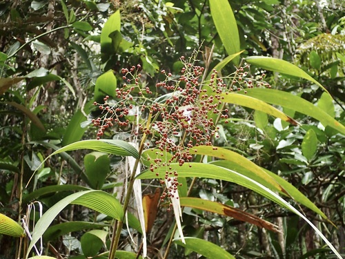

Joinvilleaceae
(No widely accepted common name)
Joinvilleaceae is a small, monogeneric family of large, grass-like monocotyledonous herbs placed in the order Poales. The single genus, Joinvillea, comprises 2-4 species found on islands in the Pacific Ocean (from Malesia to Hawaii and Oceania). They are robust plants characterized by pleated leaves and terminal panicles of small flowers, followed by fleshy drupes.
Overview
The Joinvilleaceae family contains only the genus Joinvillea, with species distributed across various Pacific islands, including the Malay Peninsula, Borneo, New Guinea, Solomon Islands, Fiji, Samoa, New Caledonia, and Hawaii. These plants are large, rhizomatous perennial herbs that can reach several meters in height, resembling robust grasses, bamboos, or small palms in general appearance.
They typically grow in moist, shaded forest understories or along forest margins, often at higher elevations. Their most striking vegetative feature is their large, strongly pleated (plicate) leaves with sheathing bases. The flowers are small and inconspicuous, borne in large, branched terminal inflorescences (panicles). The fruit is a fleshy drupe containing one to three seeds enclosed in hard pyrenes (stones).
Joinvilleaceae has no significant economic importance. Its scientific interest lies in its phylogenetic position within the order Poales, the large and vital order that includes grasses, sedges, rushes, and bromeliads. Joinvilleaceae represents one of the earlier diverging lineages within this order, closely related to families like Ecdeiocoleaceae and Flagellariaceae.
Quick Facts
- Scientific Name: Joinvilleaceae Toml. & A.C.Sm.
- Common Name: (None widely accepted)
- Number of Genera: 1 (Joinvillea)
- Number of Species: 2-4
- Distribution: Pacific Islands (Malesia to Hawaii/Oceania)
- Evolutionary Group: Monocots - Commelinids - Poales
Key Characteristics
Growth Form and Habit
Large, robust, rhizomatous perennial herbs, reaching several meters tall, resembling tall grasses or small palms.
Leaves
Leaves are large, simple, alternate, lanceolate to oblong, strongly plicate (longitudinally pleated), with parallel venation. They have prominent sheathing bases that wrap around the stem. Stipules are absent.
Inflorescence
Flowers are borne in large, much-branched, terminal panicles.
Flowers
Flowers are small, bisexual or sometimes unisexual (plants then potentially dioecious), actinomorphic (radially symmetrical), and sessile or shortly pedicellate. Key features include:
- Perianth: Consists of 6 small, dry or slightly fleshy, persistent tepals arranged in two whorls of 3. Tepals are typically greenish or brownish.
- Androecium: 6 stamens in two whorls of 3, with distinct filaments. Anthers are basifixed.
- Gynoecium: Ovary is superior, composed of 3 fused carpels forming 3 locules. Each locule contains a single pendulous ovule. There are 3 distinct, short styles, each with a feathery or brush-like (penicillate) stigma.
Fruits and Seeds
The fruit is a fleshy or somewhat dry drupe, containing 1 to 3 hard stones (pyrenes), each enclosing a single seed. The persistent tepals often surround the base of the fruit.
Chemical Characteristics
Silica bodies are present in epidermal cells (common in Poales). Saponins may also be present.
Field Identification
Identifying Joinvilleaceae (Joinvillea) relies on recognizing its robust monocot habit and specific leaf and reproductive features:
Primary Identification Features
- Habit: Large, robust herbs (not woody) growing from rhizomes.
- Leaves: Very large, alternate, strongly plicate (pleated), with sheathing bases and parallel veins.
- Inflorescence: Large, terminal, branched panicle.
- Flowers: Small, with 6 greenish/brownish tepals and 6 stamens.
- Ovary/Styles: Ovary is superior with 3 distinct, feathery styles.
- Fruit: Fleshy or dry drupe.
- Habitat: Moist, shaded forests on Pacific islands.
Secondary Identification Features
- Rhizome: Presence of a stout underground rhizome.
- Tepals: Small, persistent, often subtending the fruit.
- Fruit Stones: Contains 1-3 hard pyrenes.
Seasonal Identification Tips
- Flowering/Fruiting Season: Varies by location, but the large panicles (either flowering or fruiting) are conspicuous when present.
- Vegetative State: The large, pleated leaves are highly characteristic year-round.
Common Confusion Points
Joinvillea might be confused with other large monocots:
- Zingiberales (e.g., Heliconiaceae, Strelitziaceae, Musaceae): Families like Heliconias or Bananas can have large leaves, but these are typically not pleated in the same way, often tear easily between veins, and have very different, often colorful and zygomorphic flowers with specialized bracts.
- Pandanaceae (Screw Pines): Can have large, strap-like leaves, but these are usually arranged spirally in dense terminal tufts, often have spiny margins, and possess very different inflorescences (spadices) and large compound fruits.
- Arecaceae (Palm family): Palms are typically woody (though some are clustering) and have distinctly pinnate or palmate compound leaves, not simple pleated leaves. Inflorescences and fruits are also very different.
- Flagellariaceae: Closely related family in Poales. Flagellaria is a climbing vine with leaf tips modified into tendrils and also has drupaceous fruits, differing in habit and leaf structure.
- Large Grasses/Bamboos (Poaceae): While robust, grasses have characteristic nodes, ligules, and different flower structure (florets with lemma/palea) and fruit (caryopsis).
Field Guide Quick Reference
Look For:
- Large, robust herbs (non-woody)
- Leaves large, alternate, strongly plicate (pleated), sheathing
- Large terminal panicle
- Flowers small, 6 tepals, 6 stamens
- Superior ovary, 3 feathery styles
- Fruit a drupe
Key Variations:
- Overall plant height
- Degree of branching in panicle
- Fruit size and color
Notable Examples (Genus Joinvillea)
The family contains only the genus Joinvillea, with few recognized species.

Joinvillea ascendens
(Ohe) (Hawaii)
Endemic to the Hawaiian Islands. A tall, herbaceous plant found in wet forests. Characterized by its large, pleated leaves and terminal panicles. It is considered rare or endangered.

Joinvillea plicata
(Various local names)
Found more widely across the Pacific, from Malesia through Melanesia to Polynesia (excluding Hawaii). Similar in appearance to J. ascendens, with robust habit, pleated leaves, and terminal panicles. Some subspecies or variations may exist across its range.
Phylogeny and Classification
Joinvilleaceae is a monocot family placed in the large and economically important order Poales. This order is part of the Commelinid clade of monocots, which also includes orders like Arecales (palms), Zingiberales (gingers, bananas), and Commelinales (spiderworts).
Within Poales, Joinvilleaceae belongs to a group of early-diverging lineages sometimes referred to as the "flagellariid clade" or similar groupings. Molecular studies consistently show it is closely related to the families Ecdeiocoleaceae (a small family endemic to southwestern Australia) and Flagellariaceae (containing the single climbing genus Flagellaria). This group (Joinvilleaceae + Ecdeiocoleaceae + Flagellariaceae) is often considered sister to the core Poales clade, which includes the vast majority of species in families like Poaceae (grasses), Cyperaceae (sedges), Restionaceae, and Bromeliaceae.
Position in Plant Phylogeny
- Kingdom: Plantae
- Clade: Angiosperms (Flowering plants)
- Clade: Monocots
- Clade: Commelinids
- Order: Poales
- Family: Joinvilleaceae
Evolutionary Significance
Joinvilleaceae, despite its small size, is significant for understanding the evolution of the Poales order:
- Basal Poales Lineage: Represents one of the early branches in the Poales phylogeny, retaining features that may be ancestral within the order or represent unique adaptations.
- Link to Flagellariaceae/Ecdeiocoleaceae: Its close relationship to these other small families provides insights into the early diversification and biogeography of this part of the Poales tree.
- Morphological Traits: The combination of robust herbaceous habit, large pleated leaves, paniculate inflorescences, simple flowers, and drupaceous fruits contrasts with the more specialized features of core Poales groups like grasses and sedges.
- Island Biogeography: Its distribution across Pacific islands makes it relevant for studies of island evolution and dispersal.